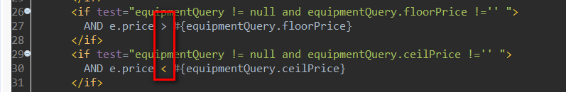
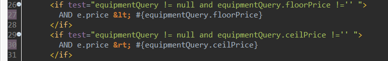

16:28:31,261 ERROR MapperFactoryBean:82 - Error while adding the mapper 'interface com.yyq.biker.mapper.EquipmentMapper' to configuration.
org.apache.ibatis.builder.BuilderException: Error creating document instance. Cause: org.xml.sax.SAXParseException; lineNumber: 30; columnNumber: 22; 元素内容必须由格式正确的字符数据或标记组成。
at org.apache.ibatis.parsing.XPathParser.createDocument(XPathParser.java:259)

第一种方法：
用了转义字符把>和<替换掉，然后就没有问题了。
SELECT * FROM test WHERE 1 = 1 AND start_date <= CURRENT_DATE AND end_date >= CURRENT_DATE
附：XML转义字符
< | < | 小于号 |
> | > | 大于号 |
& | & | 和 |
' | ’ | 单引号 |
" | " | 双引号
|

第二种方法：<![CDATA[ ]]>
因为这个是xml格式的，所以不允许出现类似“>”这样的字符，但是都可以使用<![CDATA[ ]]>符号进行说明，将此类符号不进行解析
你的可以写成这个：
mapper文件示例代码 <![CDATA[ when min(starttime)<='12:00' and max(endtime)<='12:00' ]]> |